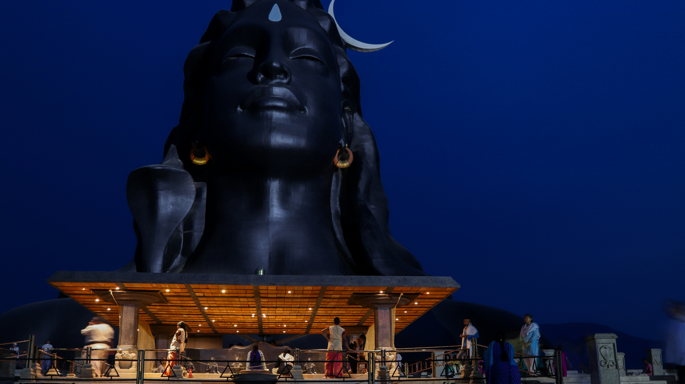

Photo: At Infinity / UnsplashAccelerator Workshop · India 2026· 1/5
The field work happens on the Save Soil farm, a Conscious Planet initiative,
and the workshop is hosted by the Isha Foundation at their Yoga Center in Coimbatore, Tamil Nadu.